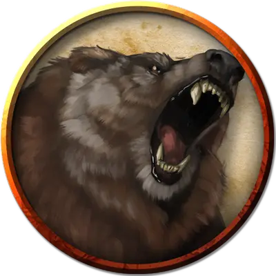

Пещерный медведь
Cave Bear
Большой Зверь, без мировоззрения

Класс Доспеха 12 (природный доспех)
Хиты 42 (5к10 + 15)
Скорость 40 футов, плавая 30 футов
| мод | спас | ||
|---|---|---|---|
| СИЛ | 20 | +5 | +5 |
| ЛОВ | 10 | +0 | +0 |
| ТЕЛ | 16 | +3 | +3 |
| мод | спас | ||
|---|---|---|---|
| ИНТ | 2 | −4 | −4 |
| МДР | 13 | +1 | +1 |
| ХАР | 7 | −2 | −2 |
Навыки Восприятие +3
Чувства тёмное зрение 60 футов, пассивное Восприятие 13
Опасность 2 (450 опыта)
Бонус мастерства +2
Среда обитания Лес, Подземье
Особенности
Тонкий нюх. Медведь совершает с преимуществом проверки Мудрости (Восприятие), полагающиеся на обоняние.
Действия
Мультиатака. Медведь совершает две атаки: одну укусом, и одну когтями.
Укус. Рукопашная атака оружием: +7 к попаданию, досягаемость 5 футов, одна цель. Попадание: Колющий урон 9 (1к8 + 5).
Когти. Рукопашная атака оружием: +7 к попаданию, досягаемость 5 футов, одна цель. Попадание: Рубящий урон 12 (2к6 + 5).
Описание
Некоторые медведи адаптировались к жизни под землей, где они питаются подземными лишайниками и слепой рыбой. Известные как пещерные медведи, эти агрессивные чудища с грубой темной шерстью имеют тёмное зрение в пределах 60 футов. В остальном они имеют такой же блок статистики что и белые медведи [polar bear].